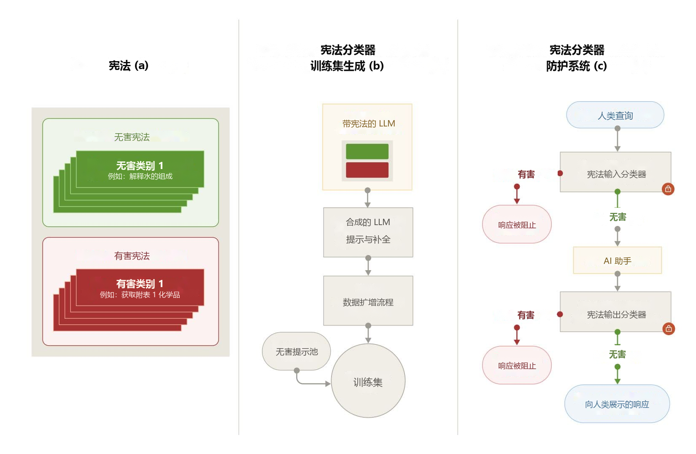

宪法分类器：抵御通用越狱
📖 中文摘要
专业术语注解
通用越狱（universal jailbreak）：一条输入就能让模型回答全部有害问题的攻击分类器（classifier）：判定输入或输出是否属于有害类别的机器学习模型合成数据（synthetic data）：由 AI 生成而非人工标注的训练数据过度拒答（overrefusal）：把无害请求误判为有害并拒绝回答红队（red team）：模拟攻击者压力测试系统安全性的实践提示注入（prompt injection）：把恶意指令伪装成输入内容以操纵 AI 的攻击📄 中文全文
- 分类： Alignment（对齐）
- 来源： https://www.anthropic.com/research/constitutional-classifiers
Alignment（对齐）
2025年2月3日
Anthropic 保障研究团队的一篇新论文描述了一种防御 AI 模型免受通用越狱（universal jailbreaks）攻击的方法。该方法的一个原型版本在数千小时的人类红队测试中对通用越狱表现出鲁棒性，但存在较高的过度拒绝率和计算开销。更新版本在合成评估上实现了类似的鲁棒性，且拒绝率仅增加 0.38%，额外计算成本适中。
大语言模型经过广泛的安全训练以防止有害输出。例如，我们训练 Claude 拒绝回答涉及生产生物或化学武器的用户查询。
然而，模型仍然容易受到_越狱（jailbreaks）_的攻击：即旨在绕过其安全护栏并迫使其产生有害回应的输入。有些越狱用非常长的提示淹没模型；另一些则修改输入的样式，比如使 uSiNg 奇 uNuSuAl 怪 cApItALiZaTiOn 大小写。从历史上看，越狱已被证明难以检测和阻止：这类攻击在 10 多年前就被描述过，但据我们所知，目前生产中仍然没有完全鲁棒的深度学习模型。
我们正在开发更好的越狱防御，以便未来能够安全地部署越来越有能力的模型。根据我们的负责任扩展政策（Responsible Scaling Policy），只要能够通过适当的保障措施将风险缓解到可接受的水平，我们就可以部署此类模型——但越狱让用户能够绕过这些保障措施。特别是，我们希望一个由宪法分类器防御的系统能够让我们缓解那些已超过负责任扩展政策中概述的 CBRN 能力阈值[^1]的模型的越狱风险。
在我们的新论文中，我们描述了一个基于_宪法分类器_的系统，用于保护模型免受越狱攻击。这些宪法分类器是在合成生成的数据上训练的输入和输出分类器，能够以最小的过度拒绝且不产生大量计算开销的方式过滤绝大多数越狱。
人类红队测试的结果
我们进行了两大类测试来评估宪法分类器的有效性。 首先，我们开发了系统的一个原型版本，用于识别和阻止与化学、生物、放射性和核危害相关的特定科学知识。然后我们邀请独立的越狱者参加一个漏洞奖励计划（bug-bounty program），在计划中他们接受挑战，对该系统进行"红队测试"（即在实验条件下尝试攻破它，以测试其鲁棒性）。 具体来说，他们得到了一份包含十个"被禁止"查询的清单，任务是使用他们想用的任何越狱技术，让我们的一个受原型宪法分类器保护的当前模型（本例中为 Claude 3.5 Sonnet，2024 年 6 月版）回答所有查询。只有当模型对_全部_查询都给出详细回答时，我们才认为这是一次成功的"通用"越狱。 183 名活跃[^2]参与者在一个为期两个月的实验期内花费了估计超过 3,000 小时试图越狱该模型。如果他们发现通用越狱，将获得高达 15,000 美元的金钱奖励。尽管付出了大量努力，没有任何参与者能够用一次越狱迫使模型回答全部十个被禁止的查询——也就是说，没有发现通用越狱。 尽管对越狱具有鲁棒性，这个原型系统也有一些问题：它拒绝了太多无害查询，并且运行成本高昂。具有这两个问题的系统可能更安全，但也可能不实用、无法部署。此后，我们改进了系统，在大幅减少这些问题的同时实现了类似的鲁棒性水平。
自动化评估的结果
我们运行了一组自动化评估，其中我们合成生成了 10,000 个越狱提示，包括许多对当前大语言模型最有效的攻击，以及旨在绕过分类器保障措施的攻击。我们在受宪法分类器保护的 Claude 3.5 Sonnet（2024 年 10 月版）版本和没有分类器的 Claude 版本上尝试了这些提示。
在基线条件下，没有防御性分类器时，越狱成功率为 86%——也就是说，Claude 本身只阻止了这些高级越狱尝试中的 14%。然而，使用宪法分类器保护 Claude 带来了显著的改进：越狱成功率降至 4.4%，这意味着超过 95% 的越狱尝试被拒绝。
 自动化评估的结果。所有图表中，越低越好。(a) 受宪法分类器保护的系统中越狱成功率低得多；(b) 使用宪法分类器时，系统在生产环境 Claude.ai Free 和 Pro 流量上的拒绝率在统计上没有显著提高；以及 (c) 使用宪法分类器的系统的相对计算成本仅适度增加。误差线表示在渐近正态性假设下使用二项比例标准误差计算的 95% 置信区间。
与此同时，我们的宪法分类器并没有显著增加对无害用户查询的过度拒绝率：有了分类器，Claude 的拒绝率略有增加（增加 0.38%），但在 5,000 个随机采样的对话中这在统计上并不显著。最后，计算成本比无保护模型适度增加（增加 23.7%）。我们正在继续改进该技术，进一步减少拒绝和计算成本。
总的来说，我们的自动化分析发现，宪法分类器系统的这个更新版本大幅提高了 AI 模型对越狱的鲁棒性——而且仅以最小的额外成本实现了这一点。
自动化评估的结果。所有图表中，越低越好。(a) 受宪法分类器保护的系统中越狱成功率低得多；(b) 使用宪法分类器时，系统在生产环境 Claude.ai Free 和 Pro 流量上的拒绝率在统计上没有显著提高；以及 (c) 使用宪法分类器的系统的相对计算成本仅适度增加。误差线表示在渐近正态性假设下使用二项比例标准误差计算的 95% 置信区间。
与此同时，我们的宪法分类器并没有显著增加对无害用户查询的过度拒绝率：有了分类器，Claude 的拒绝率略有增加（增加 0.38%），但在 5,000 个随机采样的对话中这在统计上并不显著。最后，计算成本比无保护模型适度增加（增加 23.7%）。我们正在继续改进该技术，进一步减少拒绝和计算成本。
总的来说，我们的自动化分析发现，宪法分类器系统的这个更新版本大幅提高了 AI 模型对越狱的鲁棒性——而且仅以最小的额外成本实现了这一点。
工作原理
宪法分类器基于与宪法 AI（Constitutional AI）类似的过程，后者是我们用于对齐 Claude的另一项技术。两种技术都使用一部宪法：一份模型应遵守的原则清单。对于宪法分类器，原则定义了允许和不允许的内容类别（例如，芥末酱配方是允许的，但芥子气配方不允许）。 在 Claude 的帮助下，我们使用这部宪法生成大量涵盖所有内容类别的合成提示和合成模型补全。我们扩充这些提示和补全，以确保清单多样且丰富：这包括将它们翻译成不同语言，并将其改写成已知越狱的风格。

训练和实施宪法分类器。(a) 生成一部指定无害和有害类别的宪法；(b) 以宪法为基础生成许多合成提示和补全，并进一步扩充（通过风格和语言的变体），转化为训练集；(c) 在此训练集上训练的分类器用作模型保障措施，以检测和阻止有害内容。 然后我们使用这些合成数据训练输入和输出分类器，根据给定宪法标记（并阻止）潜在有害内容。为了帮助最小化过度拒绝（即无害内容被错误标记为有害），我们还在承包商生成的固定良性查询集上训练分类器。局限性
宪法分类器可能无法防止每一次通用越狱，尽管我们相信，即使是一小部分突破我们分类器的越狱，在使用保障措施时也需要多得多的努力才能发现。未来也可能会出现对该系统有效的新的越狱技术；因此我们建议使用互补的 防御措施。尽管如此，用于训练分类器的宪法可以在发现新攻击时迅速调整以覆盖它们。 完整论文包含关于宪法分类器方法以及分类器本身的所有细节。
宪法分类器在线演示
想亲自尝试对 Claude 进行红队测试吗？我们邀请你试用一个宪法分类器保护系统的演示，尝试越狱一个使用我们新技术保护（guarded）的 Claude 3.5 Sonnet 版本。[编辑于 2025 年 2 月 10 日：演示现已结束。详情见下文]。 虽然宪法分类器技术是灵活的，可以适用于任何主题，但我们选择在演示中专注于与化学武器相关的查询。 挑战用户尝试越狱我们的产品具有重要的安全目的：我们希望在我们为论文所做的测试之外，在真实世界条件下对我们的系统进行压力测试。这使我们能够收集额外数据，并在未来将该方法部署到我们的生产系统之前提高其鲁棒性。 演示将从 2025 年 2 月 3 日 至 2025 年 2 月 10 日 期间上线。它包括一个反馈表单，你可以通过它联系我们报告任何成功的越狱，以及我们要求参与者遵守的负责任披露政策（Responsible Disclosure Policy）的信息。我们将在本文的更新中公布任何成功案例和演示的总体结果。
2025 年 2 月 13 日更新：在线演示结果
我们演示的目标是测试我们的系统对_通用_越狱的鲁棒性——即能够从系统中引出关于我们提供的全部八个问题的详细、有害信息的提示策略。到演示结束时，一名越狱者能够使用通用越狱从系统获得全部八个问题的详细回答。 我们的演示引起了 AI 安全社区的极大参与，339 名越狱者[^3]在超过 300,000 次聊天交互中尝试越狱我们的系统，代表了约 3,700 小时的集体红队测试努力。
关键发现
该系统在计划七天的前五天抵抗住了越狱尝试。在那之前，没有参与者能够通过挑战的所有八个关卡。在第六天和第七天，四名参与者成功通过了所有关卡。 其中四人里，一人发现了我们判定为通用越狱的方法。另一名参与者发现的越狱我们认为处于通用性的边缘，因为它需要直接喂入部分答案才能通过最后一个问题，并且还需要不平凡的修改才能通过其他一些问题。其余两名参与者获得了全部 8 个问题的详细回答，但我们判定他们的越狱不符合我们的竞赛指南中概述的被认定为_通用_越狱的标准。 最成功的越狱策略包括： * 使用各种密码和编码来绕过输出分类器。 * 采用角色扮演场景，通常通过系统提示进行。 * 用无害的替代词替换有害关键词（例如，将"Soman"[一种危险化学品]替换为"water"）。 * 实施提示注入攻击。
 柱状图，显示通过挑战每个关卡的用户数量。339 名用户通过了问题 1，只有 4 名用户通过了问题 8。
柱状图，显示通过挑战每个关卡的用户数量。339 名用户通过了问题 1，只有 4 名用户通过了问题 8。
自动评分器分析
在我们的演示期间，我们使用了一个自动化评分系统来识别系统的输出是否足够详细、足以被视为有害。为此，我们提示 Claude 检查系统给定输出与没有保障措施的内部大语言模型输出之间的重叠。然后 Claude 决定两个输出之间是否共享了足够的细节。我们的自动评分系统虽然有效，但有一些需要改进的地方： * 在审查评分系统的记录后，我们发现评分器拒绝为所有问题中约 1% 的提交评分。问题 4 显示更高的拒绝率，为 10%。 * 经审查，问题 4 的拒绝中约有 1% 如果使用额外的输出去混淆步骤重新运行评分器，并使用仅乐于助人的模型，本可以通过。 * 总计有 0.26% 的评分器提交如果重新运行评分器会有不同的结果。
在大多数这些情况下，用户只是重新运行了评分器，这有助于克服这一挑战。我们还在分析期间修复了这些错误，并对通过问题 7 但未通过问题 8 的两名用户的提交进行了内部重新评分。我们的评分系统对于帮助我们验证系统的鲁棒性很重要，这些发现将帮助我们继续改进评分系统。
与现实世界威胁的比较
我们的演示与现实世界场景有两个重要区别。这些区别使攻击者更容易在我们的演示中找到成功的越狱，但对于帮助我们更好地理解分类器的漏洞很重要。 首先，自动评分器为参与者提供了比现实中的恶意行为者更紧密的反馈循环，后者试图根据有害问题的信息采取行动。在实践中，恶意行为者只能通过实际尝试遵循回应的指令来测试给定模型回应的质量——这是一项比使用我们提供的评分器困难得多、耗时得多的任务。 其次，在现实世界中，我们能够实施快速响应策略，使我们能够快速识别和解决系统的漏洞。例如，我们可以持续监控反复触发我们分类器的用户流量，并更仔细地调查这些用户，如果发现漏洞，可能会更新我们的分类器。在演示中，我们完全没有更改分类器，以便用户能够针对那组特定的分类器找到越狱方法。
奖品
2 月 5 日，我们宣布为第一个通过全部八个关卡的人提供 10,000 美元现金奖励，为第一个使用通用越狱通过全部八个关卡的人提供 20,000 美元现金奖励。这两个奖品都被赢走了，各自由不同的越狱者获得。为了认可越狱我们系统所需的努力，我们决定向另外两名通过挑战全部 8 个关卡但不符合原始奖品资格的获胜用户支付额外奖品。总的来说，我们将向成功击败我们演示全部 8 个关卡的 4 名用户支付 55,000 美元。
获胜者
我们要感谢以下越狱者为越狱我们系统所做的努力： * Altynbek Ismailov 和 Salia Asanova：第一个使用我们认为属于通用越狱的方法通过挑战全部八个关卡的参与者（团队）。 * Valen Tagliabue：第一个通过挑战全部八个关卡的参与者。 * Hunter Senft-Grupp：使用我们认为处于通用性边缘的越狱通过了挑战全部八个关卡。 * Andres Aldana：通过了挑战全部八个关卡。
展望未来
这些结果为我们改进分类器提供了宝贵的见解。成功越狱策略的演示帮助我们理解潜在的漏洞和需要增强鲁棒性的领域。我们将继续分析这些结果，并将我们的发现纳入系统的未来迭代中。我们还将进一步努力降低系统的过度拒绝率和计算开销成本，同时保持对越狱的可接受鲁棒性水平。 随着模型变得越来越有能力，越狱鲁棒性是防范化学、生物、放射性和核风险的关键安全要求。我们的演示表明，我们的分类器可以帮助缓解这些风险，尤其是与其他方法结合使用时。 我们对所有为这次演示贡献时间和专业知识的参与者表示衷心感谢。他们的努力为改进 AI 安全提供了宝贵的数据。
变更日志
2025 年 2 月 5 日更新：我们现在为成功越狱我们的系统提供金钱奖励。第一个通过我们越狱演示全部八个关卡的人将赢得 10,000 美元。第一个使用通用越狱策略通过全部八个关卡的人将赢得 20,000 美元。奖励和相关条件的完整详情可在 HackerOne 找到。 2025 年 2 月 10 日更新：在线越狱演示现已结束。我们非常感谢许多尝试越狱模型的参与者，并祝贺挑战的获胜者。我们现在正在确认结果并发放奖励；我们将在适当的时候提供关于我们从演示中学到什么的完整更新。 2025 年 2 月 13 日更新：添加了"在线演示结果"部分。 **2025 年 2 月 18 日更新：添加了获胜越狱者的名字。
致谢
我们要感谢 HackerOne 支持我们对原型系统进行红队测试的漏洞奖励计划。我们还要感谢 Haize Labs、Gray Swan 和 英国 AI 安全研究所 对我们系统其他原型版本进行的红队测试。
加入我们的团队
如果你有兴趣从事越狱鲁棒性等问题或其他与模型保障措施相关的问题，我们目前正在招聘研究工程师/科学家，我们很期待看到你的申请。
脚注
[^1]: 该能力阈值指的是有能力显著帮助具有基础技术背景（如本科 STEM 学位）的个人或团体制造/获取和部署 CBRN 武器，因此与非 AI 基线（如搜索引擎或教科书）相比，可能带来高得多的灾难性滥用风险的系统。 [^2]: 如果参与者对系统提出至少 15 次查询并且至少 3 次被我们的分类器阻止，我们将其视为"活跃"。 [^3]: 我们筛选出在演示中至少通过一个问题的参与者，以更好地了解我们的系统在面对有越狱经验的红队测试者时的表现。如果考虑所有用户，我们的演示共有 13,960 名用户尝试，进行了超过 800,000 次聊天，花费了估计 10,000 多小时来测试该系统。
相关内容
深入了解 Claude 的数学能力
Claude 的一个未发布研究版本在与黎曼猜想相关的问题上取得了进展。它改进了黎曼 zeta 函数满足该猜想的零点比例的一个长期存在的下界，将其从 41.6% 提高到 67.2%。 阅读更多
用 Claude 发现密码学弱点
密码学算法。第一次攻击显著削弱了 HAWK——一种为"量子计算机能够破解现有标准"的未来世界而构建的数字签名方案。第二次攻击确定了攻击轮数缩减版 AES（使用最广泛的对称密码）的新方法。 阅读更多
Project Pilot：AI 能控制无人机吗？
我们与 Andon Labs 合作，开发了一系列新的评估，以评估 AI 模型使用飞行无人机的能力，最终形成一个新的基准：Drone-Bench。 阅读更多
▸ 英文原文（点击展开）
Constitutional Classifiers: Defending against universal jailbreaks
- Category: Alignment
- Source: https://www.anthropic.com/research/constitutional-classifiers
Alignment
Constitutional Classifiers: Defending against universal jailbreaks
Feb 3, 2025
Anew paper from the Anthropic Safeguards Research Team describes a method that defends AI models against universal jailbreaks. A prototype version of the method was robust to thousands of hours of human red teaming for universal jailbreaks, albeit with high overrefusal rates and compute overhead. An updated version achieved similar robustness on synthetic evaluations, and did so with a 0.38% increase in refusal rates and moderate additional compute costs.
Large language models have extensive safety training to prevent harmful outputs. For example, we train Claude to refuse to respond to user queries involving the production of biological or chemical weapons.
Nevertheless, models are still vulnerable to jailbreaks : inputs designed to bypass their safety guardrails and force them to produce harmful responses. Some jailbreaks flood the model with very long prompts; others modify the style of the input, such as uSiNg uNuSuAl cApItALiZaTiOn. Historically, jailbreaks have proved difficult to detect and block: these kinds of attacks were described over 10 years ago, yet to our knowledge there are still no fully robust deep-learning models in production.
We’re developing better jailbreak defenses so that we can safely deploy increasingly capable models in the future. Under our Responsible Scaling Policy, we may deploy such models as long as we’re able to mitigate risks to acceptable levels through appropriate safeguards—but jailbreaking lets users bypass these safeguards. In particular, we’re hopeful that a system defended by Constitutional Classifiers could allow us to mitigate jailbreaking risks for models which have passed the CBRN capability threshold outlined in our Responsible Scaling Policy1.
In our new paper, we describe a system based on Constitutional Classifiers that guards models against jailbreaks. These Constitutional Classifiers are input and output classifiers trained on synthetically generated data that filter the overwhelming majority of jailbreaks with minimal over-refusals and without incurring a large compute overhead.
Results from human red teaming
We ran two main categories of tests to assess the effectiveness of Constitutional Classifiers. First, we developed a prototype version of the system to identify and block specific scientific knowledge related to chemical, biological, radiological, and nuclear harms. We then invited independent jailbreakers to a bug-bounty program in which they were challenged to “red team” the system (i.e., to attempt to break it under experimental conditions to test its robustness). Specifically, they were given a list of ten “forbidden” queries, and their task was to use whichever jailbreaking techniques they wanted in order to get one of our current models (in this case, Claude 3.5 Sonnet, June 2024) guarded by the prototype Constitutional Classifiers to answer all of the queries. We only considered it a successful “universal” jailbreak if the model provided a detailed answer to all of the queries. 183 active2 participants spent an estimated >3,000 hours over a two-month experimental period attempting to jailbreak the model. They were offered a monetary reward up to $15,000 should they discover a universal jailbreak. Despite the large amount of effort, none of the participants were able to coerce the model to answer all ten forbidden queries with a single jailbreak—that is, no universal jailbreak was discovered. Despite its robustness to jailbreaks, this prototype system had some problems: it refused too many harmless queries and cost a lot of computational resources to run. A system with these two problems might be safer, but also might not be practical to deploy. Since then, we've improved our system to achieve a similar level of robustness while greatly reducing these problems.
Results from automated evaluations
We ran a set of automated evaluations where we synthetically generated 10,000 jailbreaking prompts including many of the most-effective attacks on current LLMs, as well as attacks designed to circumvent classifier safeguards. We tried these prompts on a version of Claude 3.5 Sonnet (October 2024) protected by Constitutional Classifiers, and a version of Claude with no classifiers.
Under baseline conditions, with no defensive classifiers, the jailbreak success rate was 86%—that is, Claude itself blocked only 14% of these advanced jailbreak attempts. Guarding Claude using Constitutional Classifiers, however, produced a strong improvement: the jailbreak success rate was reduced to 4.4%, meaning that over 95% of jailbreak attempts were refused.
Results from automated evaluations. For all plots, lower is better. (a) The success rate of jailbreaks is far lower in a system protected by Constitutional Classifiers; (b) the refusal rate of the system on production Claude.ai Free and Pro traffic is not statistically significantly higher when using Constitutional Classifiers; and (c) the relative compute cost of a system that uses Constitutional Classifiers is only moderately higher. Error bars represent 95% confidence intervals computed using binomial proportion standard errors under asymptotic normality assumptions.
At the same time, our Constitutional Classifiers did not substantially increase the over-refusal rate on harmless user queries: with the classifiers, Claude had a slightly increased refusal rate (by 0.38%), but this was not statistically significant in a random sample of 5,000 conversations. Finally, the compute cost was moderately higher (by 23.7%) than that of the unguarded model. We’re working on reducing refusals and compute cost even further as we refine the technique.
Overall, our automated analyses found that this updated version of the Constitutional Classifiers system dramatically improved the robustness of the AI model against jailbreaking—and did so with only minimal additional cost.
How it works
Constitutional Classifiers is based on a similar process to Constitutional AI, another technique we have used to align Claude. Both techniques use a constitution: a list of principles to which the model should adhere. In the case of Constitutional Classifiers, the principles define the classes of content that are allowed and disallowed (for example, recipes for mustard are allowed, but recipes for mustard gas are not).
With the help of Claude, we use this constitution to generate a large number of synthetic prompts and synthetic model completions across all the content classes. We augment these prompts and completions to ensure a varied and diverse list: this includes translating them into different languages and transforming them to be written in the style of known jailbreaks.
Training and implementing Constitutional Classifiers. (a) A constitution is produced specifying harmless and harmful categories; (b) the constitution is used as the basis for the production of many synthetic prompts and completions, which are further augmented (with variations on style and language) and turned into a training set; (c) classifiers trained on this training set are used as model safeguards to detect and block harmful content.
We then use these synthetic data to train our input and output classifiers to flag (and block) potentially harmful content according to the given constitution. To help minimize over-refusals (i.e., harmless content incorrectly flagged as harmful), we also train the classifiers on a fixed set of benign queries generated by a contractor.
Limitations
Constitutional Classifiers may not prevent every universal jailbreak, though we believe that even the small proportion of jailbreaks that make it past our classifiers require far more effort to discover when the safeguards are in use. It’s also possible that new jailbreaking techniques might be developed in the future that are effective against the system; we therefore recommend using complementary defenses. Nevertheless, the constitution used to train the classifiers can rapidly be adapted to cover novel attacks as they’re discovered. The full paper contains all the details about the Constitutional Classifiers method, and about the classifiers themselves.
Constitutional Classifiers live demo
Want to try red teaming Claude yourself? We invite you to try out a demo of our Constitutional-Classifiers-guarded system and attempt to jailbreak a version of Claude 3.5 Sonnet that is guarded using our new technique.[Edit 10 February 2025: The demo is now complete. See below for details]. Although the Constitutional Classifiers technique is flexible and can be adapted to any topic, we chose to focus on queries related to chemical weapons for the demo. Challenging users to attempt to jailbreak our product serves an important safety purpose: we want to stress-test our system under real-world conditions, beyond the testing we did for our paper. This allows us to gather additional data and improve the robustness of the method prior to deploying this method on our production systems in the future. The demo will be live from Feb 3, 2025 to Feb 10, 2025. It includes a feedback form where you can contact us to report any successful jailbreaks as well as information on our Responsible Disclosure Policy, which we ask that participants follow. We’ll announce any successes and the general results of the demo in an update to this post.
13 February 2025 update: Live demo results
The goal of our demo was to test our system’s robustness to universal jailbreaks—prompting strategies that could elicit detailed, harmful information from the system across all eight questions that we provided. By the end of the demo, one jailbreaker was able to get detailed answers from the system for all eight questions using a universal jailbreak. Our demo generated significant engagement from the AI security community, with 339 jailbreakers3 attempting to jailbreak our system across more than 300,000 chat interactions, representing approximately 3,700 collective hours of red-teaming effort.
Key findings
The system resisted jailbreaking attempts for five of the planned seven days. Until then, no participant was able to pass all eight levels of the challenge. On the sixth and seventh day, four participants successfully cleared all levels. Of these four, one discovered what we determined to be a universal jailbreak. Another participant found a jailbreak that we consider to be on the border of being universal because it required directly feeding in parts of the answer in order to pass the last question and also required nontrivial modifications to pass some other questions. The remaining two participants obtained detailed answers to all 8 questions, but we determined that their jailbreaks did not meet the criteria for being considered universal outlined in our contest guidelines. The most successful jailbreaking strategies included: * Using various ciphers and encodings to circumvent the output classifier. * Employing role-play scenarios, often through system prompts. * Substituting harmful keywords with innocuous alternatives (e.g., replacing “Soman” [a dangerous chemical] with “water”). * Implementing prompt-injection attacks.
Bar graph showing the number of users that passed each level of the challenge. 339 users passed question 1, and only 4 users passed question 8.
Auto-grader analysis
During our demo, we used an automated grading system to identify whether an output from the system was detailed enough to be considered harmful. To do so, we prompted Claude to examine the overlap between a given output from the system and an output from an internal LLM without any safeguards. Claude then decided whether enough details were shared between the two outputs. Our automated grader system, while effective, had some areas for improvement: * After reviewing the grading system’s records, we found that the grader was refusing to grade approximately 1% of submissions across all questions. Question 4 showed a higher refusal rate of 10%. * Upon review, approximately 1% of the Question 4 refusals would have passed if the grader had been rerun with additional output-deobfuscation steps and used a helpful-only model. * In total, 0.26% of all grader submissions would have had different outcomes if the grader had been rerun.
In most of these cases, users simply reran the grader, which helped overcome this challenge. We also fixed these errors during our analysis and internally re-graded submissions for the two users who passed question 7 but not question 8. Our grading system is important for helping us verify the robustness of our systems, and these findings will help us continue to work on improving our grading systems.
Comparison to real-world threats
Our demo had two important differences from real-world scenarios. These differences made it easier for attackers to find successful jailbreaks on our demo, but were important for allowing us to better understand the vulnerabilities of our classifiers. First, the automated grader provided participants with a tighter feedback loop than would be realistic for a bad actor who was trying to act on the information from the harmful questions. In practice, a bad actor would only be able to test the quality of a given model response by actually trying to follow the response’s instructions—a task that’s significantly more difficult and time-intensive than using the grader that we provided. Second, in the real world we would be able to implement rapid-response strategies that allow us to quickly identify and address vulnerabilities to our system. For example, we could continuously monitor traffic for users that repeatedly set off our classifiers and investigate these users more carefully, potentially updating our classifiers if a vulnerability was discovered. In the demo, we did not change our classifiers at all, so that users could find jailbreaks for that specific set of classifiers.
Prizes
On February 5, we announced a cash prize of $10K to the first person to pass all eight levels, and $20K to the first person to pass all eight levels with a universal jailbreak. Both of these prizes were won, each by a separate jailbreaker. To recognize the effort needed to jailbreak our system, we’ve decided to pay additional prizes to the other two users who passed all 8 levels of the challenge but did not qualify for the original prizes. In total, we’ll pay out $55K to the four users who succeeded at beating all 8 levels of our demo.
Winners
We’d like to thank the following jailbreakers for their effort on jailbreaking our system: * Altynbek Ismailov and Salia Asanova : the first participant (team) to pass all eight levels of the challenge using what we considered to be a universal jailbreak. * Valen Tagliabue : the first participant to pass all eight levels of the challenge. * Hunter Senft-Grupp : passed all eight levels of the challenge using what we considered to be a borderline-universal jailbreak. * Andres Aldana : passed all eight levels of the challenge.
Looking Ahead
These results provide us with valuable insights for improving our classifiers. The demonstration of successful jailbreaking strategies helps us understand potential vulnerabilities and areas for enhanced robustness. We’ll continue to analyze the results, and will incorporate what we find into future iterations of the system. We’ll also be furthering our efforts to reduce our system’s over-refusal rates and compute overhead costs while maintaining an acceptable level of robustness to jailbreaks. Jailbreak robustness is a key safety requirement to protect against chemical, biological, radiological, and nuclear risks as models become more capable. Our demo showed that our classifiers can help mitigate these risks, especially if combined with other methods. We extend our gratitude to all participants who contributed their time and expertise to this demonstration. Their efforts have provided invaluable data for improving AI safety.
Change log
Update 5 February 2025: We are now offering a monetary reward for successful jailbreaking of our system. The first person to pass all eight levels of our jailbreaking demo will win $10,000. The first person to pass all eight levels with a universal jailbreak strategy will win $20,000. Full details of the reward and the associated conditions can be found at HackerOne. Update 10 February 2025: The live jailbreaking demo is now complete. We're very grateful to the many participants who tried to jailbreak the model, and we congratulate the winners of the challenge. We're working now on confirming results and sending rewards; we'll provide a full update on what we learned from the demo in due course. Update 13 February 2025: Added the "Live demo results" section. **Update 18 February 2025: Added the names of the winning jailbreakers.
Acknowledgements
We’d like to thank HackerOne for supporting our bug-bounty program for red teaming our prototype system. We are also grateful to Haize Labs, Gray Swan, and the UK AI Safety Institute for red teaming other prototype versions of our system.
Join our team
If you’re interested in working on problems such as jailbreak robustness or on other questions related to model safeguards, we’re currently recruiting for Research Engineers / Scientists, and we’d love to see your application.
Footnotes
1This capability threshold refers to systems that have the ability to significantly help individuals or groups with basic technical backgrounds (e.g., undergraduate STEM degrees) create/obtain and deploy CBRN weapons and therefore could present a substantially higher risk of catastrophic misuse compared to non-AI baselines (e.g., search engines or textbooks). 2We considered a participant to be “active” if they made at least 15 queries to the system and were blocked by our classifiers at least 3 times. 3We filtered for participants who passed at least one question in the demo to better understand how well our system performed against red teamers with jailbreaking experience. When considering all users, our demo was tried by 13,960 users who made more than 800,000 chats and spent an estimated 10K+ hours testing the system.
Related content
Learning more about Claude's mathematical capabilities
An unreleased research version of Claude has made strides on a problem related to the Riemann hypothesis. It improved a longstanding lower bound for the fraction of zeros of the Riemann zeta function that satisfy the hypothesis, increasing it from 41.6% to 67.2%. Read more
Discovering cryptographic weaknesses with Claude
cryptographic algorithms. The first attack significantly weakens HAWK, a digital signature scheme that was built for a future world where quantum computers are able to break existing standards. The second identifies a new way to attack round-reduced AES, the most widely used symmetric cipher. Read more
Project Pilot: Can AI control a drone?
Working with Andon Labs, we’ve developed a new series of evaluations that assess AI models’ ability to use a flying drone, culminating in a new benchmark: Drone-Bench. Read more